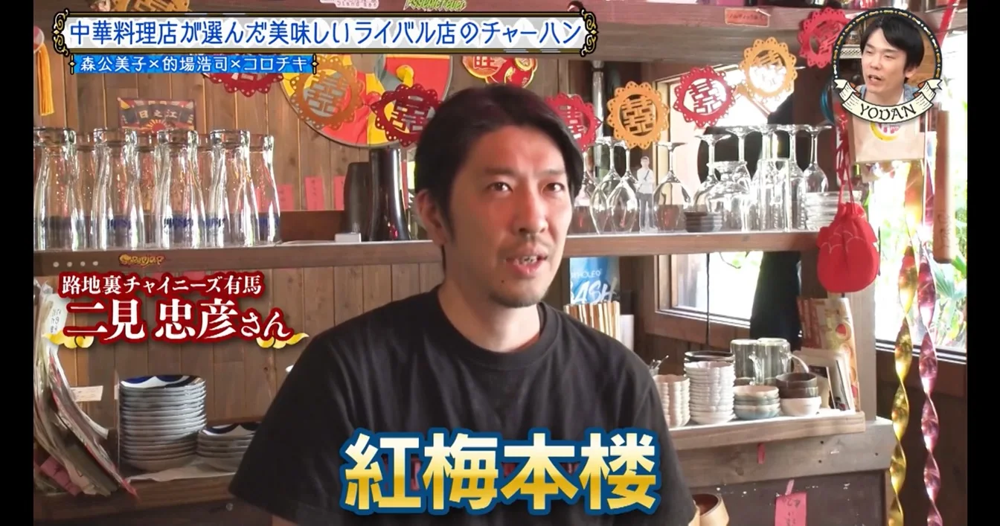
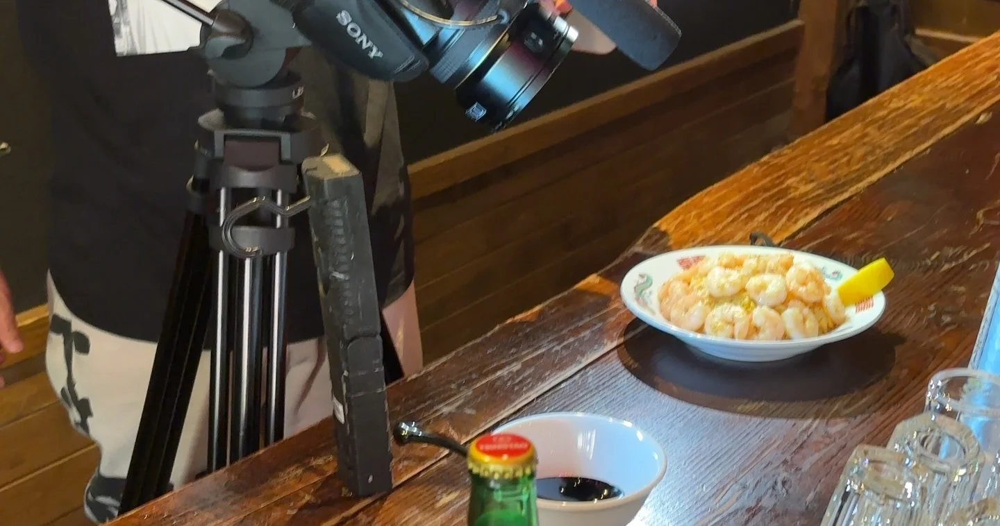

2025年6月18日
オッケ！！


オッケ！！ オッケ！！ かまいたちさんの 『これ余談なんですけど』に2秒でた！！ チャーハンはカットでした、、、😂 2秒出していただくだけでもありがたい。 かまいたちさんに見ていただいたし。 最近、弟がチャーハンにこだわってますんで、 また食べに来てください！ #中華バル#中華#中華料理#福島区グルメ#路地裏#路地裏チャイニーズ有馬#有馬#シュウマイ#麻婆豆腐 #エビまみれチャーハン #これ余談なんですけど
2025年6月18日


オッケ！！ オッケ！！ かまいたちさんの 『これ余談なんですけど』に2秒でた！！ チャーハンはカットでした、、、😂 2秒出していただくだけでもありがたい。 かまいたちさんに見ていただいたし。 最近、弟がチャーハンにこだわってますんで、 また食べに来てください！ #中華バル#中華#中華料理#福島区グルメ#路地裏#路地裏チャイニーズ有馬#有馬#シュウマイ#麻婆豆腐 #エビまみれチャーハン #これ余談なんですけど